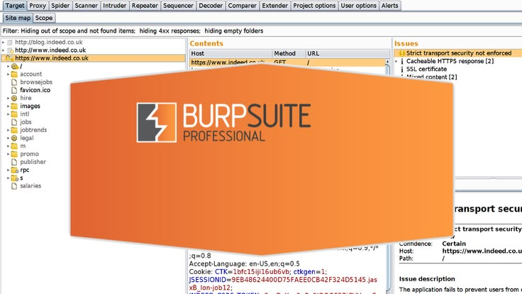
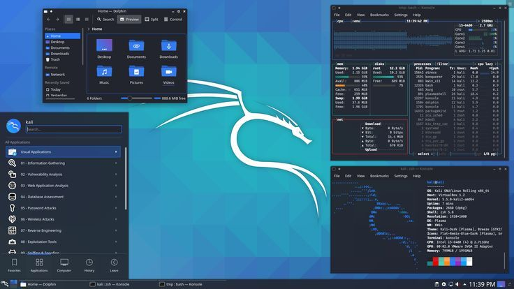

Ethical Hacking
S'introduire légalement dans des systèmes informatiques avec l'accord de leur propriétaire pour identifier les failles avant exploitation par les cybercriminels.
CommencerBienvenue sur Bingo, la plateforme d'apprentissage en ligne
CommencerDécouvrez comment les ordinateurs communiquent entre eux et comment les données circulent sur un réseau.
Lire plusVoyez comment comprendre les systèmes utilisés par les entreprises,et les analyser.
Lire plusApprenez à automatiser les taches et comprendre le fonctionnement des logiciels.
Lire plusComprenez les menaces, les protections, et les méthodes d'analyses et de préventions.
Lire plusS'introduire légalement dans des systèmes informatiques avec l'accord de leur propriétaire pour identifier les failles avant exploitation par les cybercriminels.
CommencerOutil d'analyse du trafic réseau, il permet de capturer et d'examiner les paquets de données echangés entres les appareils afin de compendre les communications de de détecter les activités suspectes.
Lire plusOutil d'exploration réseau qui permet de découvrir les appareils connectés, identifier les ports ouvets et de détecter les services accessibles sur une machine.
Lire plus
Utiliser pour tester la sécurité des applications web. Il permet d'intercepter et d'analyser les requetes entre un navigateur et un serveur afin d'identifier d'éventuelles vulnérabilités.
Lire plus
système d'exploitation basé sur Linux. Conçu pour les tests de sécurité et contient de nombreux otils qui permettent d'analyser les sytèmes et de réaliser des tests d'intrusions.
Lire plusBingo Cyber Academy forme la nouvelle génération de développeurs aux technologies du web et du Big Data. Apprenez à concevoir, analyser et déployer des solutions innovantes qui transforment les données en véritables leviers de performance.
CommencerSuivez-nous: